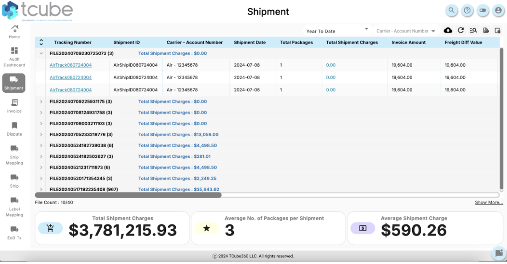
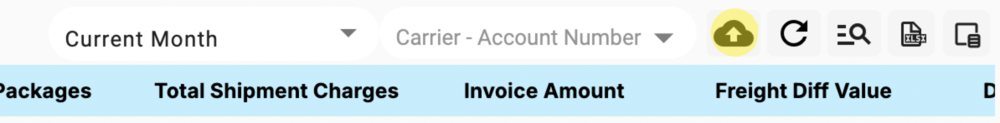

Audit Cube - Shipment Dashboard
Shipment Table
The Shipment Dashboard presents your shipment data in a table format, similar to the Main Dashboard but tailored specifically to shipment information. The table includes columns such as Tracking Number, Shipment ID, Carrier Account Number, Shipment Date, Total Packages, Total Shipment Charges, Invoice Amount, and Freight Difference Value.
Expandable Rows: Each shipment file listed in the table can be expanded by clicking the arrow next to the Tracking Number, revealing more detailed information about the individual shipments contained within that file.
Column Customization: Users can drag and rearrange columns to their preferred order, making it easier to focus on the most critical data points.
Uploading Shipment Files
Upload Button: Located at the top of the dashboard, the "Upload Shipment File" button allows users to upload shipment data files directly into the dashboard. It is crucial to note that the files must be in XLSX format (Excel) and not CSV.
File Requirements: Before uploading, ensure that the file meets the format requirements to avoid errors. If the file is in the wrong format, convert it to XLSX before attempting the upload.
Troubleshooting: If the upload fails, check the file format and ensure that all required data fields are populated correctly. If the problem persists, verify that the file size does not exceed any platform limits.
Refreshing Data
Refresh Button: After uploading new shipment data, use the Refresh button (circular arrow icon) to update the table and display the newly uploaded data.
Troubleshooting: If the table does not update after refreshing, try clearing the browser cache or performing a hard refresh (Ctrl + F5). Ensure that the file upload was successful before attempting to refresh.
Viewing Detailed Shipment Information
Microscopic View: Clicking on a Tracking Number within the table opens a detailed view of that specific shipment, referred to as the Microscopic View. This detailed view includes package-level information such as Package Number, Actual Weight, Billed Weight, Dimensions (Length, Width, Height), and more.
Export Option: From the Microscopic View, you can export this detailed information to an Excel file by clicking the Export button.
Advanced Troubleshooting
Shipment Data Not Appearing After Upload:
Issue: If newly uploaded shipment data does not appear in the table after hitting refresh, the issue could be related to the file format or data integrity.
Solution: Check File Format: Double-check that the uploaded file is in XLSX format. If it is in CSV or any other format, the upload will fail.
Data Integrity: Verify that all required fields in the upload file are populated. Missing or incorrectly formatted data fields can cause the upload to fail.
Refresh Troubleshooting: If refreshing does not update the data, try performing a hard refresh (Ctrl + F5) or clearing the browser cache.
Microscopic View Not Loading:
Issue: When clicking on a Tracking Number, the Microscopic View may not load or may load incomplete data.
Solution: Network Check: Ensure that your internet connection is stable, as slow connections may cause the detailed view to load improperly.
Browser Compatibility: Confirm that you are using a supported browser version. Outdated browsers might struggle to display detailed views correctly.
Retry: Close the view and click the Tracking Number again to reload the data.
Exporting Issues from Microscopic View:
Issue: If you encounter issues while trying to export data from the Microscopic View, it may be due to browser settings or file size limitations.
Solution: Browser Settings: Ensure that pop-up blockers are disabled for the Audit Cube platform, as they might prevent the export function from working.
File Size: If the data is too large to export in one go, consider exporting in smaller batches or splitting the data across multiple files.